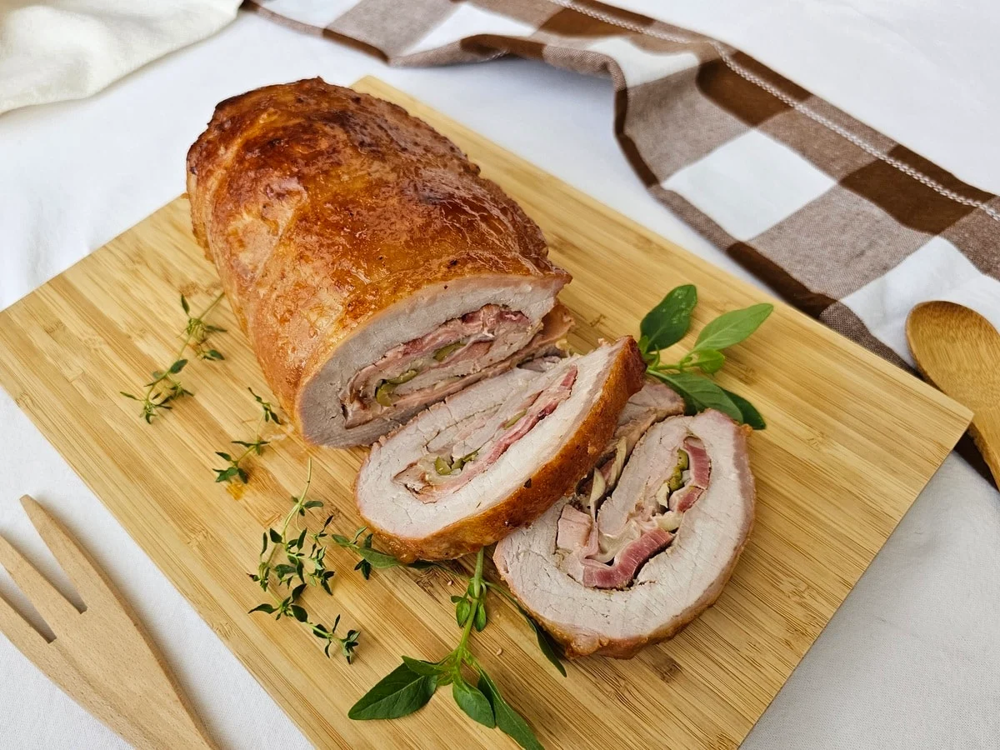

Ingredientes
💡 Dica: Clique nos ingredientes para riscá-los.
- 1 peça de lombo suíno (aprox. 1,5 kg a 2 kg)
- 300 g de presunto fatiado
- 300 g de mussarela fatiada
- 150 g de bacon fatiado ou em cubos
- 150 g de azeitonas (picadas ou em rodelas)
- 1 cebola média fatiada
- Sal e pimenta-do-reino a gosto
- Azeite de oliva e orégano a gosto
- Barbante culinário (para amarrar)
Modo de Preparo
- Abra o lombo: Coloque a peça de carne em uma tábua. Com uma faca bem afiada, corte o lombo no sentido do comprimento, desenrolando-o como se fosse um rocambole ou um "bifão" grande e uniforme.
- Tempere: Fure levemente a superfície da carne com a ponta da faca para ajudar a absorver o tempero. Tempere toda a extensão com sal e pimenta-do-reino.
- Recheie: Sobre a carne aberta, monte as camadas na seguinte ordem: presunto fatiado, mussarela fatiada, o bacon, as azeitonas e a cebola fatiada.
- Finalize o recheio: Salpique orégano por cima e regue com um fio generoso de azeite.
- Enrole e amarre: Enrole o lombo de volta, no formato de rocambole, deixando a emenda virada para baixo. Use o barbante culinário para amarrá-lo firmemente, garantindo que o recheio não vaze.
- Asse: Embrulhe o lombo firmemente em papel-alumínio. Coloque em uma assadeira e leve ao forno preaquecido a 200 °C por cerca de 45 a 60 minutos.
- Doure: Retire o papel-alumínio, regue a carne com o caldo que se formou no fundo da forma e devolva ao forno por mais 15 a 20 minutos (ou até que o bacon e a superfície estejam bem dourados).